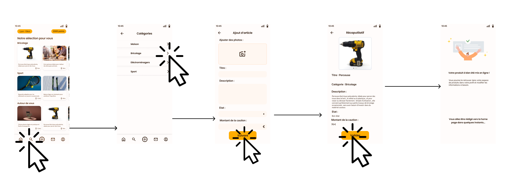
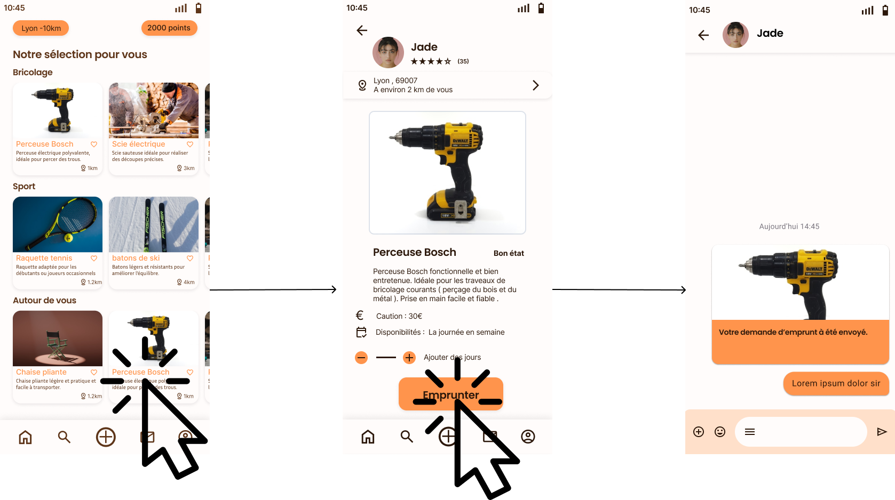

PARTAGE est né d’un constat simple : nous avons tous déjà eu besoin d’un objet pour une durée limitée. Qu’il s’agisse d’un équipement ponctuel, d’un objet utilisé occasionnellement ou d’un besoin temporaire, acheter du neuf pour un usage bref n’est souvent ni économique ni écologique. Notre solution répond à cette réalité de manière simple et intelligente. Des particuliers peuvent mettre à disposition des objets qu’ils possèdent et n’utilisent plus régulièrement. Grâce à notre application, ces objets retrouvent une utilité et profitent à d’autres, plutôt que de rester stockés ou d’être remplacés inutilement.En partageant leurs biens, les utilisateurs cumulent des points qu’ils peuvent convertir, quand ils le souhaitent, en bons d’achat auprès de partenaires engagés, qui partagent nos valeurs et œuvrent contre le gaspillage et la surconsommation. Que l’on mette à disposition ou que l’on emprunte, chacun y gagne : des économies, une consommation plus responsable et une démarche vertueuse, bénéfique pour tous.
PARTAGE s’adresse à toutes les personnes qui ont besoin d’objets ponctuellement, sans vouloir les acheter.PARTAGE s’adresse à toutes les personnes qui ont besoin d’objets ponctuellement, sans vouloir les acheter. À celles et ceux qui préfèrent emprunter plutôt que consommer inutilement. PARTAGE est aussi faite pour les particuliers qui possèdent des objets en bon état, peu ou pas utilisés, et qui souhaitent leur donner une seconde vie en les mettant à disposition, simplement et sans démarche commerciale. Que vous soyez étudiant, parent, bricoleur occasionnel, PARTAGE s’adresse à tous ceux qui veulent économiser, réduire le gaspillage et adopter une consommation plus responsable, sans contrainte et sans échange d’argent. En résumé, PARTAGE est faite pour celles et ceux qui croient qu’un objet a plus de valeur quand il est utilisé, partagé et utile à plusieurs.
Empruntez des objets pour un usage ponctuel sans payer. Plus besoin d’acheter des outils ou équipements que vous n’utiliserez qu’une fois. Simple, rapide et pratique.
Mettez vos outils et objets à disposition des autres. Vous les faites servir plus longtemps tout en gagnant des points à convertir en bons d’achat.
Profitez d’une consommation responsable et solidaire. Moins de dépenses, moins de gaspillage et une démarche gagnant-gagnant pour tous.
Ajouter un article :
Emprunter un objet :
Générer un QR-Code :

Testez la version prototype de Partage
PARTAGE est un projet pensé pour évoluer dans le temps et s’adapter aux besoins réels de ses utilisateurs. L’objectif est d’aller au-delà du simple partage d’objets et de construire un écosystème collaboratif durable. À terme, l’application pourra intégrer le partage de services entre particuliers : aide au bricolage, petits travaux, montage de meubles ou accompagnement ponctuel. Une manière de valoriser les compétences de chacun, en complément du partage d’objets.
Besoin d’un objet ponctuellement ? Trouvez-le près de chez vous, empruntez-le en toute simplicité et évitez les achats inutiles. Le partage devient un réflexe du quotidien.